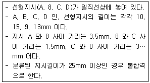

자기비파괴검사기능사 (2012-10-20 기출문제)
1과목: 자기탐상시험법
1. 와전류탐상시험의 특징을 설명한 것 중 틀린 것은?
- 결함의 종류. 형상, 처수를 정확하게 판별하기 어렵다.
- 탐상 및 재질검사 등 복수 데이터를 동시에 얻을 수 없다.
- 표면으로부터 깊은 곳에 있는 내부결함의 검출은 곤란하다.
- 복잡한 형상을 갖는 시험체의 전면탐상에는 능률이 떨어진다.
(정답률: 70%)

2. 누설검사법 중 압력변화시험에 대한 설명으로 틀린것은?
- 누설위치를 측정하기에 적합한 시험법이다.
- 압력변화에 따라 누설랑을 측정하는 방법이다.
- 일정시간 경과 후 압력변화를 측정하므로 작업시간이 긴 편이다.
- 압력계로 측정이 가능하므로 누설 발생 여부를 알 수 있으며 특별한 추적가스가 필요하지 않다.
(정답률: 43%)
3. 시험체의 표면이 열려 있는 결함의 검출에 가장 적합한 비파괴검사법은?
- 침투탐상시험
- 초음파탐상시험
- 방사선투과시험
- 중성자투과시험
(정답률: 89%)
4. 초음파탐상시험에 필요한 음향 임피던스를 옳게 나타낸 것은?
- 음향 임피던스 = 초음파의 속도 × 재질의 밀도
- 음향 임피던스 = 초음파의 파장 × 재질의 밀도
- 음향 임피던스 = 초음파의 속도 × 재질의 탄성계수
- 음향 임피던스 = 초음파의 파장 × 재질의 탄성계수
(정답률: 72%)
5. 다음 중 비파괴검사의 신뢰도를 향상시킬 수 있는 내용을 설명한 것으로 틀린 것은?
- 비파괴겸사를 수행하는 기술자의 기량을 향상시켜 신뢰도를 높일 수 있다.
- 제품 또는 부품에 적합한 비파괴검사법의 선정을 통해 검사의 신뢰도를 향상시킬 수 있다.
- 제품 또는 부품에 적합한 평가 기준의 선정 및 적용으로 검사의 신뢰도를 향상시킬 수 있다.
- 검출 가능한 모든 지시 및 불연속을 제거하고 폐기하므로써 검사의 신뢰도를 향상시킬 수 있다.
(정답률: 82%)
6. 자분탐상시험에 대한 설명 중 틀린 것은?
- 표면결함 검사에 적합하다.
- 강자성체에는 적용할 수 없다.
- 시험체의 크기에는 크게 영향을 받지 않는다.
- 침투탐상시험만큼 엄격한 전처리가 요구되지 않는 다.
(정답률: 87%)
7. 음향방출시험에 대한 설명으로 옳은 것은?
- 검출파형은 주로 돌발형과 연속형으로 나눈다.
- 배관시스템의 실시간 모니터링에는 적용할 수 없다.
- 초음파탐상검사보다 높은 주파수를 사용하는 것이 일반적이다.
- 탐촉자가 능동적으로 초음파를 송신하여 길함에서 반사된 수신파를 계측한다.
(정답률: 56%)
8. 자분탐상시험 국부 잔류자기에 의해 나타나는 무관련 지시는 어떻게 재검사하는 것이 가장 효과적인가?
- 더 높은 전류로 검사
- 탈자 후 검사
- 더 낮은 전류로 검사
- 다른 방향우로 검사
(정답률: 76%)
9. 시험체의 표면 및 표면직하 결함을 검출하기에 적합한 비파괴검사법만으로 나열된 것은?
- 방사선투과시험, 누설시험
- 초음파탐상시험, 침투탐상시험
- 자분탐상시험, 와전류탐상시험
- 자분탐상시험, 초음파탐상시험
(정답률: 84%)
10. 침투탐상시험의 원리에 대한 설명으로 옳은 것은?
- 시험체내부에 있는 결함을 눈으로 보기 쉽도록 시약을 이용하여 지시모양을 관찰하는 방법 이다.
- 결함부에 발생하는 자계에 의한 자분의 부착을 이용하여 관찰하는 방법이다.
- 결함부에 현상제를 투과시켜 그 상을 재생하여 내부 결함의 실상을 관찰하는 방법이다.
- 시험체 표면에 열린 결함을 눈으로 보기 쉽도록 시약을 이용하여 확대된 지시모양을 관찰하는 방법이다.
(정답률: 76%)
11. 방사선시험과 초음파탐상시험을 비교하였을 때 초음파탐사 검사가 더 우수한 경우는?
- 블로홀 검출
- 라미네이션 검출
- 결과의 저장 용이
- 결함의 종류 판별
(정답률: 65%)
12. 다음 중 음향방출검사(AE)와 관련이 없는 것은?
- 음향반사
- 카이저 효과
- 미세 균열의 성장 유무
- 소성 변형에 의한 에너지 방출
(정답률: 35%)
13. 고체가 소성 변형하며 발생하는 탄성파를 검출하여 결함의 발생, 성장 등 재료 내부의 동적 거동을 평가하는 비파괴 검사법은?(오류 신고가 접수된 문제입니다. 반드시 정답과 해설을 확인하시기 바랍니다.)
- 누설검사
- 초음파탐상시험
- 음향방출시험
- 와전류탐상시험
(정답률: 32%)
14. 차폐되지 않은 지역 에서 방사선투과시험 을 할 때 6m떨어진 거리에서의 선량율이 12mSv/h 어연 이 동위 원소의 거리가 24m 일 때 선량율(mSv/h)은 얼마인 가?
- 0.75
- 1
- 3
- 48
(정답률: 48%)
15. 자분탐상법의 시험 순서에서 자화공정에 해당하는 것은?
- 시험체의 온도 및 조도를 측정한다.
- 시험체에 적용하는 전류치를 설정한다.
- 시험체에 강한 잔류자기가 남아있을 경우 전류자기를 없애주는 공정을 행한다.
- 시험체에 도포할 자분을 선정한다.
(정답률: 47%)
16. 다음 중 자계의 특성을 설명한 것으로 틀린 것은?
- 자계는 진공을 포함하여 거의 모든 물체 중에 존재한다.
- 자계의 방향은 N극에서 나와서 S극으로 향하는 방향이 (+) 이다.
- 자극사이의 거리가 멀어지면 자속밀도는 증가한다.
- 자계의 세기는 각각의 위치에서 크기와 방향을 갖는 다.
(정답률: 76%)
17. 자분탐상시험시 시험품의 탈자가 필요하지 않는 경우는?
- 연속법으로 검사할 때
- 시험품에 상자성체일 때
- 시험품을 검사한 후 고온 열처리할 때
- 시험품이 작을 때
(정답률: 71%)
18. 자분탐상시험에서 반파정류 전류를 직류 대신 사용하는 이유는?
- 표면결함의 검출감도가 높기 때문에
- 표면 아래 결함의 검출감도가 높기 때문에
- 전력이 더 세기 때문에
- 자분의 유동성을 향상시키는 교류를 만들기 때문에
(정답률: 45%)
19. 자분탐상시험 시 코일의 권선 수를 알아야 하는 이유는?
- 자속밀도를 측정하기 위해서
- 자장강도를 측정하기 위해서
- 자화전류를 계산하기 위해서
- 자화방법을 선택하기 위해서
(정답률: 57%)
20. 자분탐상시험시 시험품에 여러 가지 불연속이 나타났다면 어떻게 해야 하는가?
- 시험 품을 폐기한다.
- 불연속을 제거한 후 시험품을 사용한다.
- 불연속은 적 용허용 기준에 의거 판정한다.
- 균열의 길이를 확인키 위해 파고시험 을 실시한다.
(정답률: 49%)
2과목: 자기탐상관련규격
21. 다음 중 자외선 등에 사용되는 수은아크 전구의 수명을 단축시키는 가장 큰 요인은?
- 전구에 묻어 있는 먼지 등의 이물질
- 압력 전압의 잦은 변화
- 잦은 전원 개폐(on, 0ff)
- 시험 장소의 급격 한 온도변화
(정답률: 56%)
22. 제품에 대한 자분탐상시험 중 탐상기의 고장이 발견되었을때 이의 대처 방법으로 가장 적합한 것은?
- 탐상기를 교정 검사한 날짜 이후의 모든 제품을 재 검사한다.
- 탐상기의 고장이 발생한 시점 을 추정 하여 이후를 재검사한다.
- 탐상기로 측정된 것 중 합격된 것만 재검사한다.
- 탐상기로 측정된 것 중 불합격된 것만 재검사한다.
(정답률: 71%)
23. 자분탐상시 험 시 코일내의 자장에 큰 영향을 주지 못하는 것은?
- 코일에 흐르는 전류
- 코일의 길이
- 코일의 직경
- 코일의 감은 수
(정답률: 57%)
24. 자분탐상시험 중 표면에 노출되지 않은 결함을 검출할 경우 사용할 자화전류로 가장 좋은 것은?
- 교류, 연속법
- 직류, 연속법
- 교류, 잔류법
- 직류, 잔류법
(정답률: 38%)
25. 자분 탐상시험에서 자장의 강도를 나타내는 단위는?
- 에르스텟 (0e)
- 맥스웰 (Mx)
- 가우스(G)
- 암페어 (A)
(정답률: 37%)
26. 다음 재료 중 반자성체인 것은?
- Fe
- N¡
- Cu
- Co
(정답률: 75%)
27. 자분모양의 관찰에 대한 설명으로 틀린 것은?
- 우선 의사지시모양인지 결함지시모양인지 구별해야 한다.
- 관찰은 가급적 관찰면 정면에서 관찰한다.
- 관찰하는 광선 (자외선 및 가시광선)은 관찰면에 대해 반사광어 있는 위치와 각도에서 시행한다.
- 결함깊이를 측정 하고자할 때는 전 기저항법 등 원리를 응용한 다른 방법을 택한다.
(정답률: 46%)
28. 철강 재료의 자분탐상 시험방법 및 자분모양의 분류(KS D 0213)에 따른 자분탐상시험을 할 때 자계의 방향을 교대로 바꾸면서 자계의 강도를 감쇄시키는 것을 무엇이라고 하는가?
- 탈자
- 자화
- 통전
- 관찰
(정답률: 84%)
29. 철강 재료의 자분탐상 시험방법 및 자분모양의 분류(KS D 0213)에서 건식자분을 사용하는 경우 전처리시 시험표면의 적절한 처리 방법으로 옳은 것은?
- 잘 건조시킨다.
- 왁스로 코팅을 실시한다.
- 전류가 잘 전달되도록 습하게 한다.
- 자분이 잘 접촉되도록 오일을 바른다.
(정답률: 89%)
30. 철강 재료의 자분탐상 시험방법 및 자분모양의, 분류(KS D0213)에 따른 자분탐상시험시 시험실시에 따른 주의사항 설명으로 틀린 것은?
- 시험면 전체를 탐상키 어려울 때 1회의 탐상유효범위를 설정, 분해하여 필요한 횟수로 시험조작을 반복한다.
- 시험면 전체를 탐상키 어려워 여려 번 시행시 인접 하는 탐상유효범위는 끝부분에서 중복이 생기지 않게 한다.
- 잔류법을 사용하는 경우 자화조작 후 자분모양의 관찰을 끝낼 때까지 시험면에 다른 시험체를 접촉시켜서는 안된다.
- 확인된 자분모양이 흠에 의한 것이라고 핀정키 어려울 때 탈자를 하고 필요에 따라 표면상태를 개선하여 재시험을 하여 확인한다.
(정답률: 36%)
31. 철강 재료의 자분탐상 시험방법 및 자분모양의, 분류(KS D0213)에 따라 다음 조건과 같은 경우 올바른 평가는?

- 지시 A, B. C, D 는 연속한 지시로 불합격이다.
- 독립한 지시 A는 합격이고, B. C, D는 연속한 지시이므로 불합격 이다.
- 지시 A 와 D 는 각각 독립한 지시로 합격이고, B, C 는 연속한 지시로서 합격 이다.
- 지시 A 와 D 는 각각 독립한 지시로 합격이고, B, C 는 연속한 지시로서 불합격이다.
(정답률: 73%)
32. 철강 재료의 자분탐상 시험방법 및 자분모양의, 분류(KS D0213)에서 시험결과, 독립한 자분모양으로써 그 길이가 나비의 3배 이상인지시를 무엇이라고 하는가?
- 균열에 의한 자분모양
- 선상의 자분모양
- 연속한 자분모양
- 원형상의 자분모양
(정답률: 65%)
33. 철강 재료의 자분탐상 시험방법 및 자분모양의, 분류(KS D0213)에 따라 탐상을 수행하는 방법으로 틀린것은?
- 연속법으로 검사할 때는 자분의 적용을 완료할 수 있는 통전시간을 설정하여야 한다.
- 직류를 사용한 잔류법으로 검사할 때 통전시간은 1/1초로 3회 반복한다.
- 충격전류를 사용한 잔류법으로 검사할 때 통전시간은 1/120초 이상으로 3회 반복한다.
- 연속법으로 검사할 때는 자화조작 중에 자분의 적용을 완료한다.
(정답률: 56%)
34. 철강 재료의 자분탐상 시험방법 및 자분모양의, 분류(KS D0213)에 의한 표준시험편 및 대비시험편을 사용할 때 다음 중 가장 작은 치수에 적용할 수 있는 것은?
- B형 대비시험편의 직경
- A1-7/50(원 형)의 인공홈의 깊이
- C형 표준시험편의 인공홈의 깊이
- C형 표준시험편의 인공홈의 나비
(정답률: 66%)
35. 철강 재료의 자분탐상 시험방법 및 자분모양의, 분류(KS D0213)에 의한 축통전법에서 도체 패드(pad)에 관한 설명으로 맞지 않는 것은?
- 시험품과 전극사이에 끼워서 사용한다.
- 전류를 잘 전도하는 것이어야 한다.
- 시험코일의 내면에 부착시켜 사용한다.
- 시험품의 국부적 소손을 방지하는 역할을 한다.
(정답률: 67%)
36. 철강 재료의 자분탐상 시험방법 및 자분모양의, 분류(KS D0213)에 따라 정해진 전류값보다 강한 전류로 시험하여 전류지시가 나타난 경우 유사모양인지의 여부를 확인하는 방법으로 적합한 것은?
- 탈자 후 더욱 큰 전류로 재시험한다.
- 잔류법으로 더 강한 전류로 재시험한다.
- 연속법으로 더 강한 전류로 재시험한다.
- 전류를 작게 하거나 잔류법으로 재시험 한다.
(정답률: 53%)
37. 항공우주용 자기탐상 검사방법 (KS W4041)에서 현탁액의 오염시험 일반적으로 최소 며칠마다 실시하도록 규정하고 있는가?
- 30일
- 60일
- 90일
- 120일
(정답률: 43%)
38. 철강 재료의 자분탐상 시험방법 및 자분모양의 분류(KS D0213)에서 형광자분에 사용되는 자외선조사장치의 파장범위로 옳은 것은?
- 200 ∼ 240nm
- 240 ∼ 280nm
- 280 ∼ 320nm
- 320 ∼ 400nm
(정답률: 83%)
39. 압력 용기―비파괴 시험 일반(KS B 6752)에 따른 절차서의 개정이 필요 없는 경우는?
- 표면 전처리의 변경
- 자분종류의 변 경
- 빛의 최소강도 변경
- 탈자방법 변경
(정답률: 50%)
40. 철강 재료의 자분탐상 시험 방법 및 자분모양의 분류(KS D0213)에서 부호 B 는 무슨 방법을 뜻하는가?
- 축통전법
- 프로드법
- 코일법
- 전류관통법
(정답률: 56%)
3과목: 금속재료일반 및 용접일반
41. 철강 재료의 자분탐상 시험 방법 및 자분모양의 분류(KSDρ213)에서 자분 분산농도 규정시 “형광자분인 경우 자분의 입도 외에 ( )및 적용방법을 고려하여 정하고 과잉농도를 피한다."라고 되어 있다. ( )안에 맞는 말은?
- 자분의 적용시간
- 전처리 시간
- 자화 시간
- 탈자 소요시간
(정답률: 58%)
42. 압력 용기一비파괴시험 일반(KS B 6752) 에서 시험체 두께가 20mm이고. 프로드간격 을 100mm로 하였다면 최 대 자화전류 는?
- 350A
- 390A
- 430A
- 490A
(정답률: 32%)
43. 탄소강은 210 ∼ 360˚C 부근에서 인장강도는 높아지나 연신율이 갑자기 감소하여 메짐 (취성)을 가지게되는 현상은?
- 저온 메짐
- 고온 메짐
- 적멸 메짐
- 청열 메짐
(정답률: 53%)
44. 다음 중 실루민의 주성분으로 옳은 것은?
- Al ― Si
- Sn ― Cu
- Ni ― Mn
- Mg ― Ag
(정답률: 94%)
45. 다음 중 초초두랄루민 (ESD)의 조성으로 옳은 것은?
- Al ― Si 계
- AI ㅡ Mn 계
- Al ― Cu ― Si 계
- 시 一 Zn ― Mg 계
(정답률: 61%)
46. 18 - 8 스테인리스강에서 나타나는 특유의 부식 현상이 아닌 것은?
- 공식 부식 (P¡tting Corrosion)
- 응력 부식 (Stress Corrosion)
- 선택 부식 (Preferent¡aI Corrosion)
- 입계 부식 ( lntergranuIar Corrosion)
(정답률: 52%)
47. Cu 에 5 ∼ 20% 정 도의 Zn 을 함유한 황동으로 강도는 낮으나 전연성이 좋고 색깔이 금과 비슷하여 모조금 등으로 사용되는 합금은?
- 톰 백 (tombac)
- 문쯔메탈(muntz metal )
- 네어벌 황동 (naval brass)
- 알루미늄 활동(aI um¡ num brass)
(정답률: 72%)
48. 수용액에서 전착시킨 것으로 공업적으로 탄소의 함유량이 가장적은 철은?
- 전해철
- 해면철
- 암코철
- 카보닐철
(정답률: 73%)
49. 주철 중에 함유되어 있는 탄소의 형태가 아닌 것은?
- 흑연
- 공석탄소
- 유리탄소
- 화합탄소
(정답률: 21%)
50. 급속에 같은 극이 생겨 서로 반발하는 반자성체 금속이 아닌 것은?
- Bi
- Sb
- Mn
- Au
(정답률: 30%)
51. 원표점 거리가 50mm이고, 시험편이 파괴되기 직전의 표점겨리가 60mm 일 때 연 신율은?
- 5%
- 10%
- 15%
- 20%
(정답률: 50%)
52. 금속의 이온화 경향에 대한 설명으로 틀린 것은?
- 금속이 전자를 잃기 쉬운 경향의 순서이다.
- 이온화 경향이 큰 순서는 K ＞Ca ＞Na ＞Tㅣ 이다.
- 이온화 경향이 작을수록 귀한 금속 즉 귀금속이라 한다.
- 이온화 경향의 순서와 전기 음성도의 순서는 서로 반대되는 순서를 지닌다.
(정답률: 43%)
53. 탄소량을 약 0.8%함유한 강은?
- 공석 강
- 아공석 강
- 과공석 강
- 공정주철
(정답률: 57%)
54. 청동의 기계적 성질 중 경도는 구리에 주석이 몇 % 함유되었을 때 가장 높게 나타나는가?
- 10%
- 20%
- 30%
- 50%
(정답률: 49%)
55. 시에 1 ∼ 1.5%의 Mn을 합금한 내식성 알루미늄합금으로 가공성, 용접성이 우수하여 저장 탱크, 기름 탱크 등에 사용되는 것은?
- 알민
- 알드리
- 알클래드
- 하이드로날륨
(정답률: 73%)
56. 1 ∼ 5 μm 정도의 비금속 입자가 금속이나 합금의 기지중에 분산되어 있는 복합재료로 서멧(cermet) 이라고도 불리는 것은?
- 클래드 금속 복합 재료
- 입자 강화 금속 복합 재료
- 분산 강화 금속 복합 재료
- 섬유 강화 금속 복합 재료
(정답률: 38%)
57. 주기율표상에 나타난 금속 원소 중 용융 온도가 가장 높은 원소와 가장 낮은 원소로 올바르게 짝지어진 것은?
- 철 (Fe)과 납(Pb)
- 구리 (Cu) 와 아연 (Zn)
- 텅스텐 (W)과 이리듐(Ir)
- 텅스텐 (W)과 수은(Hg)
(정답률: 76%)
58. AW-300인 용접기로 전체 작업 시간 10분 중 4분을 용접하였다면 이때의 사용률은 얼마인가?
- 40%
- 50%
- 60%
- 70%
(정답률: 78%)
59. 다음 중 용접 의 용착법에서 스킵법(Skip method)의 설명으로 가장 적합한 것은?
- 공작물을 가접 또는 지그로 고정 하여 변형의 발생을 방지하는 법
- 용접하기 전에 변형할 각도만큼 반대 방향으로 각을 주는 방법
- 비이드를 좌우 대칭으로 하여 변형을 방지하는 방법
- 용접 길이를 짧게 나누어 간격을 두면서 용접하여 변형을 적게 하는 방법
(정답률: 71%)
60. 다음 중 산소와 아세틸렌에 의한 가스용접에서 탄화불꽃의 아세틸렌 페더(feather) 길이는 어느 정 도인가?
- 백심길이의 0.5 ∼ 1배
- 겉불꽃의 1 ∼ 1.5배
- 백심길이의 2 ∼ 3배
- 겉불꽃의 2 ~ 3배
(정답률: 39%)